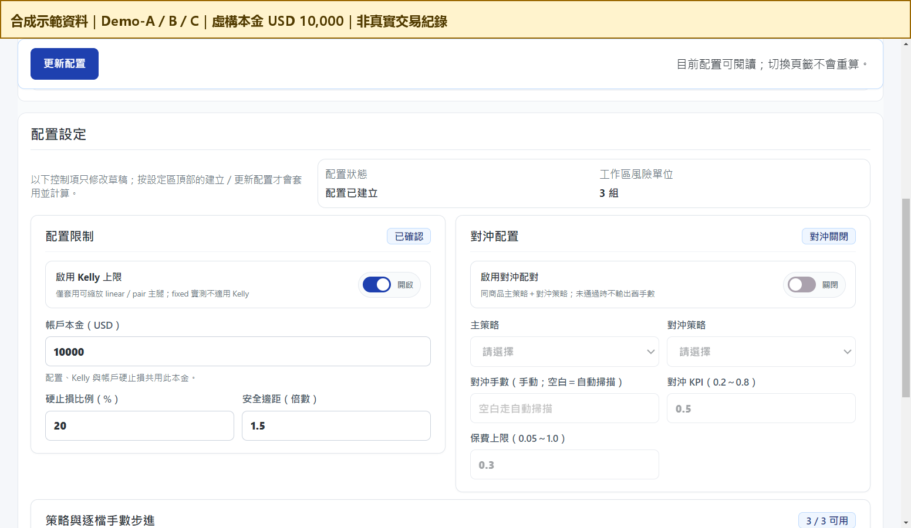
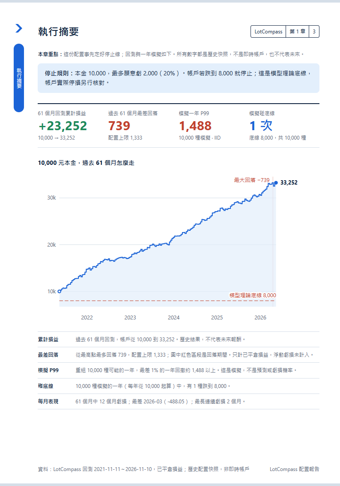

LotCompass ／ 交易風險管理・自用
不知道每個策略該下幾手？交給模型計算，不靠感覺決定
帳戶同時配置數個外匯策略，最大的困擾是不知道每個策略該下幾手。
憑感覺決定，標準每次都可能不一樣；下得太重，一段連續虧損就可能讓帳戶撐不住。
所以我想把主觀因素拿掉：手數只看歷史數據和事先訂好的風險規則。
憑感覺決定
- 不知道每個策略該下幾手
- 判斷標準每次可能不一樣
- 說不出為什麼是這個數字
LotCompass
- 依歷史回撤、可接受的最大虧損和 Kelly 上限算出建議手數
- 每個手數附上原因，例如受 Kelly 上限限制
- 風險數字標明是歷史與模擬估計，不是未來虧損的上限
Kelly 公式依策略過去的勝率和盈虧比，估算一個配置比例 f*：
f* = (b × p − q) ÷ b
p 是勝率，q 是敗率（1 − p），b 是盈虧比（獲利交易的中位數 ÷ 虧損交易中位數的絕對值）。理論值通常太激進，所以 LotCompass 只取 f* 的 1/8，再結合這個策略的歷史最大回撤換算成手數上限：在這個手數下，歷史最大回撤約等於本金 × 調整後的比例。交易少於 30 筆的策略樣本不足，不套用這個上限。這是根據歷史資料的估計，不是保證的最大虧損。
不自動下單、不連券商。工具只負責算和呈現，要不要採用由我決定。
更多細節：為什麼重做、完整功能、展示資料怎麼來
為什麼重做：之前做過一版類似的工具，承諾要守住帳戶 20% 的停損線，重新檢查後發現計算撐不起這個承諾，也陸續找到嚴重錯誤；繼續修補只會越來越亂，所以重新做了 LotCompass。
功能：資料對不上就具名拒絕，不用猜的；所有策略用同一段評估區間計算；列出歷史最大回撤、模擬一年的回撤分位數，以及同期持倉的 MAE 代理估計（不是實際帳戶浮虧）；暫停策略前必須逐項人工確認；同一次計算匯出給 AI 讀的 JSON 和給人看的 HTML，JSON 再交給 Skill 產出每次週期檢視的報告。
展示資料：三個示範策略（Demo-A、B、C）的交易紀錄由程式隨機產生，本金設為虛構的 10,000 美元。報告裡的手數、權益曲線與績效都是合成結果，不是我的交易績效，也不是投資建議。報告格式為 LotCompass 2.2.0。


